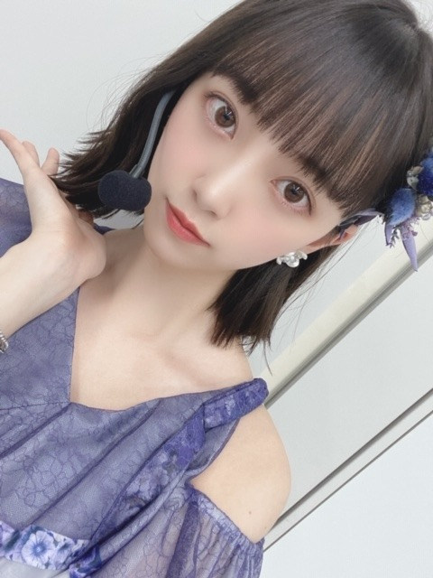
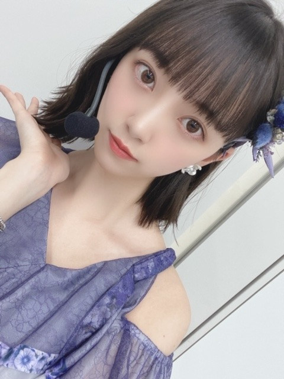
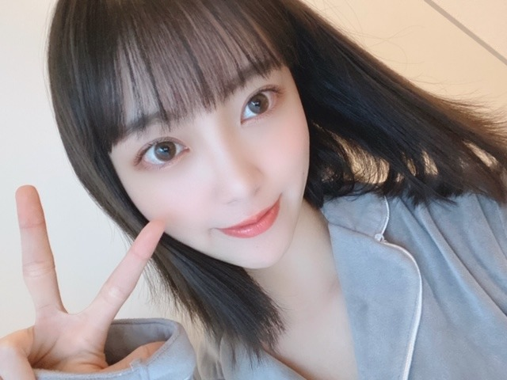
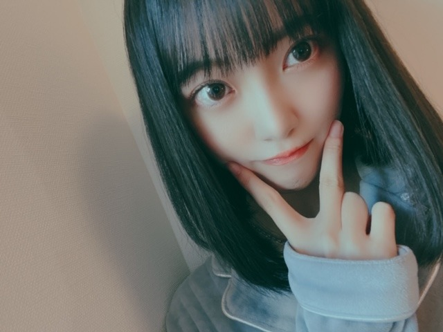
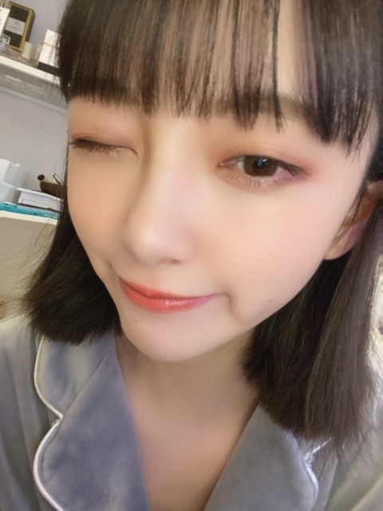
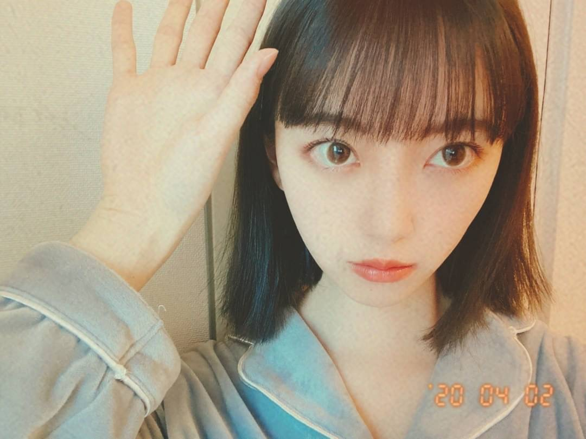

2020/0404Satばっさり
Mステでサプライズお披露目しましたが、
髪切りました
ずっと伸ばしててやっとロングになったのですが
思い切って久しぶりに短く☺︎
ロング派の人、すみません
ちょくちょくInstagramとかブログにロング写真も
載せますね
今回は
切りっぱなしボブ でちょっと重めな感じです!

サプライズ成功かな？

サプライズ成功かな？
Mステで初お披露目にしてびっくりさせたくて...
どうですか...？
見つけてもらえたかなぁ
どうですか...？
見つけてもらえたかなぁ
仕事場に行ったらみんな気づいてくれて
ひなちまがかわいいって言いにきてくれて
いくちゃんもまいちゅんもれんかも
好きって言ってくれて
切り立ての毛先を白石さんといくちゃんと
切り立ての毛先を白石さんといくちゃんと
松村さんと高山さんに囲まれてふさふさ触られて
日奈子にもボブを持ち上げられて
毛先が喜んでました。笑
すぐに気づいて褒めてくれるメンバーが
日奈子にもボブを持ち上げられて
毛先が喜んでました。笑
すぐに気づいて褒めてくれるメンバーが
大好きだなぁと改めて☺︎
切りすぎたかなぁと思ってたからよかった。


そういえば乃木坂に入って
初めて髪をショートにした時も3月末とかだったなぁ
懐かしい
髪っていろんなものが詰まってるので
今は心も頭もさっぱりしてます
春ですね、
あ〜
5月27日にはよならんかな〜
写真集いい感じに仕上がってます!
早く見てほしいですᕦ(ò_óˇ)ᕤ✨
ちなみに表紙が決まりまして
通常版1種、限定盤3種の計4種類です!
まだお見せできないのですが
動画で私が説明してますので、是非。
さまざまな特典も先着であります!
御予約はこちらから☺︎
ふふふ

いま、ゴルゴンゾーラを聴いているのですが
ゴルゴンゾーラのレコーディングの時、
実は風邪をひいていて声がハスキーになっていまして
"変わりものばかりいつも惹かれてしまうのはなぜだろう"
"もっとアクが強い人と喧嘩をしながら"
改めて聞いてたら全然声違うやん！
ってなりました笑
話急に逸れたけど
よかったら注目してみて聞いてください✰
絢音がいつもゴルゴンゾーラを褒めてくれるの笑
かわいい歌だねって
私が特に好きな歌詞は
"趣味が悪かろうがなにを言われようが自分が良けりゃいいでしょ？"
"だれからも好かれてちゃ独り占めできない"
かなぁ
みなさんのゴルゴンゾーラ での
好きな歌詞はありますか？
変わり者が変わり者を好きになった感じが
かわいくて好きな世界観だし
普通じゃ物足りないじゃん!っていう邪道もいいし
チーズ好きだし
モッツァレラよりゴルゴンゾーラだし
好きが詰まった曲ですね
映画でいう、"アメリ"とか"勝手にふるえてろ"みたいな世界観です
また好きな歌の好きな歌詞紹介します!
好きな歌を好きな映画に例えるのもわかる人にはわかりそうでいいかも！
これ楽しい☺︎！
普段歌詞見ながら音楽聞く派なので
話したくて仕方ないんです。笑

ちなみに
最近観て面白かった映画は
ハッピーデスデイ
最低で最高のサリー
です☺︎
この2つの映画は全然違うジャンルだけど
これをみて感じたことは、
考えてから言葉を発さないといけないってことと
毎日を一生懸命に生きるって大事だなということ
取り消せないものの1つに"言葉"があるなぁと思っていて
何気ない一言で相手を傷つけてたりするし
自分の正直に何でも言う部分は大事にしたいけど
言葉を言う前に考える瞬間も本当に大切だなって。
だってその一言でいろんなことが変わってしまうんだから。ハッピーデスデイを見て痛感しました
無意識に人を傷つけることほど
怖いものはないですもんね...
人生やり直せたらって思っても
やり直しはもちろんきかないし
だからこそ自分に相手に、正直になって
毎日を生きるって大切だなぁと。
不器用だったら変に器用ぶらないで、
不器用らしくぶつかっていこ〜
ワハハ
急募
口内炎が治る方法
ではは
2020/04/04 12:36


コメント(649)
俺は先週の金曜日放送のMステ3時間スペシャルを
見たとき、乃木坂が最初に歌った曲「シンクロニシティ」
から髪の毛が以前よりも短くなったことに俺は気付いてたよ
ショートヘアもとても可愛いよ
口内炎が治る方法は「チョコラBBを飲む」か、「納豆を1日1個食べる」、「玄米フレークまたはフルーツグラノーラを毎朝食べる」とか試すのも良いかもよ
俺は口内炎が出来たら、納豆または玄米フレーク
を毎日食べてるよ！！ 1週間以内には治ってるよ！！
すぐ治りますよ
あとは、日頃からビタミンとる
私は口内炎ができたら、潰してます。笑
それが正解なのかは分からないけれど･･･。笑笑
でも、潰したら、食事する時とかに口の中で口内炎が当たったりしないので、気にならなくなるかもしれないです！
これからも応援してます！頑張ってください
シブヤノオト、僕は見たよ。録画して見ました。みおなちゃん、めっちゃ綺麗で、めっちゃかわいかったです。
しあわせの保護色、何回聴いても、いい曲ですね。しあわせな気分になり、ほっこりしますね。
みおなちゃん、口内炎大丈夫ですか。痛いよね。はやく治るといいね。
みおなちゃん、体調に気をつけて仕事頑張ってね。
またコメントするね。
ロングより好みかな。
写真集の発売が待ちきれないな。
皆のわちゃわちゃ感が可愛いね(*^^*)
短いのも似合ってるね(^人^)
今日もお疲れ様です
髪バッサリ切りましたね
めっちゃ似合ってます
ロングもショートも好きだけど、どちらか選ばないといけないならショート派だったので、嬉しいです
ストレートにすると肩にかかるしウェーブさせれば肩にかからなくて調整が効くのが便利だね
Mステでも、しっかり見つけました
写真集楽しみです
約2ヶ月先だけど、半年前から待ってるから待つのは慣れてます笑
表紙解禁も楽しみにしてます
ゴルゴンゾーラいい曲だよね
初夏の爽やかな曲調でよく聴いてます
みおなのハスキーになってるとこ、最初に聴いた時から思ってたけど、みおなも気付いたんだね笑（なぜだろうのぜが特にハスキーだよね）
結構気に入ってる部分です
歌詞で言うならシンクロニシティの、みんなが信じてないこの世の中も思ってるより愛に溢れてるよとかsing out！の、仲間の声が聞こえるかとかが好きです
口内炎はできると中々治らないから頑張って治して下さい
早く治すなら、寝る前にパッチを貼って朝剥がすを3日くらい続けて下さい
またコメントするね
ありがとうございました
輝く未央奈さんは、やはり可愛いすぎます。
Mステでシンクロニシティでのイントロで座ってた時、顔は見えなかったですが雰囲気で未央奈さんと分かり、切った！と声上げちゃいました。
もっと切るかと思ってましたから、その長さなら大好き外ハネも決まるのでこれから楽しみですよ。
だいぶ軽くなり楽ですか？
未央奈さんは未央奈さんなので、切ったからと言っても距離おいたりしませんよ星
ロングの頃より現在の未央奈さんの写真を沢山見たいです。
4月だし春だし、気分転換にサプライズも加わりましたね。
可愛いく癒しのコレクションにボブが沢山加わり、心を満たされて幸せを感じ支えられ救われたいですよ。
写真集楽しみをありがとうございます。
特典次第で更に追加予約しますよ。
ゴルゴンゾーラ神曲ですね。
ここの所アナスターシャを主に聴いてますが、可愛さ際立つゴルゴンゾーラも好きです。
自分は、わかる人だけわかっている そんなチーズに恋してるがしいて言えば気に入ってます。
また好きな歌詞を教えてくださいね。
未央奈さんの映画解説は、分かり易く観たくなります。
参考になりますよ。
口内炎はいかがですか？
口角炎はよく発症しますが、口内炎はなったことがないのでごめんなさい。
早く治りますように。
癒される可愛い写真ばかりでなく、言葉も心に響きましたよ。
そのファン想いに感謝ですし、感動しました。
先が見えない状況でしたが、その言葉が自分に向けられてるように感じ、その甲斐もあって乗り越えられました。
救っていただきありがとうございます。
恩返ししないとです。
寒暖差が激しいのでお身体にはお気をつけてくださいね、
ありがとうございます。
頑張って行きましょう！
私も5月27日が待ち遠し～い！
表紙決まったんだね(*^^*)
益々楽しみだ～♪
未央奈は今日も元気？
私は元気だよ！
今日はリアルタイムでも観たけど、先週乃木坂ちゃんが出ていた音楽番組を見返して楽しんでいたよ✨
改めてＣＤＴＶでの４曲メドレー、合計５曲披露、圧巻だった～！
そしてそんなに披露出来るなんて、嬉しいね！
何かの番組で前に乃木坂ちゃんが、１曲じゃなくて、メドレーを歌えるようになりたいって言ってて、それが叶ったんだな～と思って感動したよ。
私も乃木坂ファン歴、６年目になります！
これからも乃木坂ちゃんを精一杯応援していくぞ～っ！！
mステ可愛かった✨
その後から未央奈を目で追ってたよ！
めっちゃ似合うよー
大好きです！あ、どっちかって言うとショート派です！笑
写真集予約したよ〜！めっちゃ楽しみ
体調は変わりないでしょうか？
毎日どのように過ごしてますか？
僕は自分の撮った写真を
Photoshopで加工して作品を
つくってます
あとぬいぐるみも作成してます
YUYA INAGAWAさんや
HN foolishfucktreeさんの作品が大好きで
将来はぬいぐるみ作家になれたら
いいなと思ってます
こんな時期ですが
楽しめることはたくさんありますからね
そして作品をつくるときは
乃木坂46の曲を聴きながらつくってます
不思議なもので聴いてる曲によって
出来上がる作品の色が全く違うんです
いつか作品を見せられたらいいなと
いや出来れば一緒にお仕事をさせていただけたら
いいなと夢みています
それでは
くれぐれもお体に気をつけて
元気に乗り切っていきましょうね
あっ、ボブとっても似合ってて
可愛いです
ボブの未央奈ちゃんは可愛いですね
ロングも好きですが、個人的にはボブの未央奈ちゃんが好きです✨
口内炎はチョコラBBですね…やっぱり
最近、土日は家にこもって乃木坂のBlu-ray観まくってます(笑)
体調に気を付けて頑張ってください❗
JC3のひよこです
可愛すぎる未央奈ちゃん
写真集買うね
友達の乃木坂そこまで知らない子が未央奈さんが好きって言っててすごく嬉しかったです
ブログ読むように言っときました
今日はめっちゃロマンスあらかじめ語られるロマンスを聞いてました笑笑
暇なのですが、JKデビューするのに今だからこそできることってありますかね？さらっとブログで教えてください
握手会行きたいです
ひよこの名札つけてくので覚えててくれたら嬉しいです
《質問》
どんな髪型の女子が好き？
じゃあまた
あれ、夏に見たら、怖くなってきちゃうよ
一回見たんだけど。
あの話もウィルス感染が関係してるよね？
口内炎は睡眠不足かストレスでしょうか？
ビタミンCを摂ってください。
髪の毛ビックリしましたが
とても可愛いです！
口内炎痛いですよね
僕も去年久々になりました
自然治癒力に任せました
お元気ですか！!口内炎ね
プロポリンスですね、うがい
するだけですよ!お大事に。
長いみおなさんも短いみおなさんも大好きです。
イソジンか、明治のうがい薬がいいと思います＾＾
ちょっとやすいのもありますが、、。
使った感じだと、最近は、
明治＞イソジンですかね☆
・むかしむかし口内炎が元で入院したことがあります。
ご自愛くださいませ☆
ショートバリ似合っとる！かわい
これからも頑張ってくださいなぁ〜
ボブかわいいよー
口内炎はショコラBB飲んで、イソジンうがい
ミネラルも同時に取るといいらしいですよ！
未央奈ちゃん、ロングもボブも全部にあってて可愛い！
Mステで髪切ってるのみて可愛いーっ！って叫んじゃった笑
私もゴルゴンゾーラ大好きな歌なんだ〜！「青カビタイプ私いくらでもウェルカムよ」の歌詞が面白くて大好き！
写真集も楽しみです
あっぴ
ボブめちゃくちゃ似合ってます〜〜超可愛い！！
個人的に外ハネでゆるく巻いてるスタイリングが最高に好きです、、、Mステも透明感、美しさ、可愛さが限界突破してました♡
体調に気をつけて頑張って下さい！
Mステお疲れ様でした(*´꒳`*)
髪切ったんだね(о´∀`о)
ボブやっぱり似合いますな
写真集楽しみにしてます(๑>◡<๑)
ゴルゴンゾーラ確かに絢音ちゃんの言うように可愛い歌ですね♪(๑ᴖ◡ᴖ๑)♪
ロングも勿論似合っていますが、やっぱり堀ちゃんは黒髪のボブが一番似合っています！
凄く可愛いです！
メンバーが寄ってくるのも分かります。
口内炎は疲れや首、肩こりなどからくるから堀ちゃん忙しいから疲れてるんだよ。。
ゆっくり出来ないかもしれないけど、できるだけゆっくり休んで体調には気をつけてください！
未央奈写真集楽しみにしてますね。
Mステ見ましたよ！とてもビックリしたよ！
凄い似合っていてとても可愛かったよ！
俺はボブのほうがとても好きです！
写真集絶対買いますね！
身体には気をつけてね！
ありがとうございます。
可愛さをありがとうございます。
今回は短くてごめんなさい。
頑張って行きましょう！
コメントする